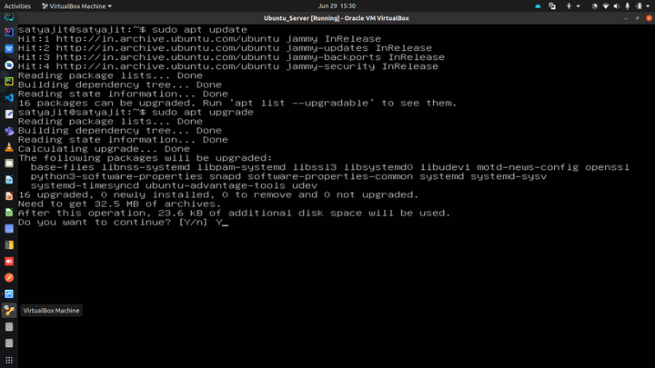
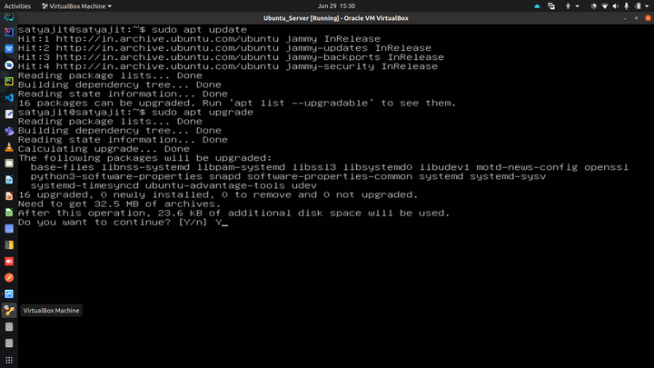
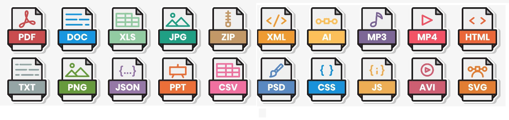

Графички кориснички интерфејс
ИКТ I · Лекција 21
Шта је кориснички интерфејс?
- Начин комуникације између корисника и програма
- Две основне врсте:
- Текстуални интерфејс
- Графички интерфејс
Текстуални интерфејс
- Унос наредби куцањем у командној линији
- Историјски пример: MS-DOS
- Данас: сервери (нпр. Ubuntu Server)
 

Графички интерфејс (GUI)
- Визуелни елементи: прозори, иконе, менији, тастери
- Екран ≈ радни сто (desktop)
- Уносимо команде мишем, додиром или тастатуром
Пример ГКИ (GUI): Windows 10

Пример ГКИ (GUI): macOS

Пример ГКИ (GUI): Kubuntu (Linux)

Пример ГКИ (GUI): iOS

Пример ГКИ (GUI): Android

Подизање система (Boot)
- Покретање BIOS/UEFI у фирмверу
- Провера хардвера и припрема уређаја
- Учитавање оперативног система са диска
- Пријављивање корисника и приказ радне површине
Основни елементи ГКИ
- Радна површина (desktop)
- Иконе и пречице
- Линија задатака / Dock
- Прозори и менији
- Показивач миша или додирни гестови
Подешавања (Settings)
- Централно место за конфигурацију система
- Обично означено иконом зупчаника
- Поставке: време, језик, приказ, звук, уређаји
Инсталирање програма
- Оперативни систем је основа, али програми додају функције
- Инсталација: копирање и подешавање програма
- Ажурирање и деинсталација по потреби
- Додељивање подразумеваних програма за типове датотека

Типови датотека
| Категорија | Екстензије |
|---|---|
| Текст | .txt, .doc, .docx, .odt, .pdf |
| Слике | .jpg, .png, .bmp, .svg, .ai |
| Видео | .mp4, .mov, .mpeg |
| Програми | .exe, .msi |

Подешавања система омогућавају избор подразумеваног програма за сваку екстензију.
Практични задатак
- Отвори прозор „Подешавања“.
- Промени позадину и тему боја.
- Додај српску ћирилицу као језик тастатуре.
- Провери подразумевани прегледач за PDF датотеке.
- Деинсталирај непотребан програм (по договору).
Резиме
- Интерфејс = комуникација са корисником
- GUI чини рад интуитивним кроз визуелне елементе
- Подешавања омогућавају персонализацију
- Познавати типове датотека и инсталацију програма